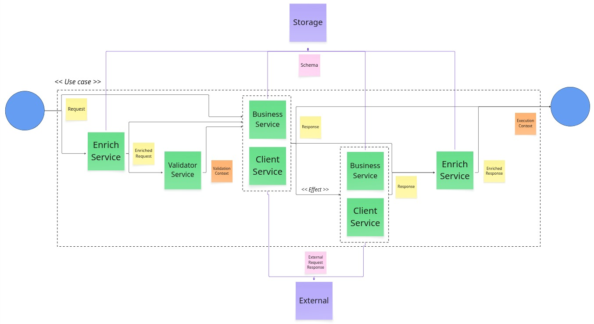

Repository Hub (Native Libraries)
The BRDD core ported to the 6 most used languages in the market. Ready for enterprise adoption.
An architectural pattern focused on making business rules the absolute protagonists of software development.

The ValidationService ensures business rules are met before main execution.
The UseCase orchestrates main logic, keeping centralized control free from infrastructure coupling.
We document interactions with external systems (e-mails, messaging) as Side Effects reported by the Context.
The ExecutionContext acts as the single source of truth, logging errors, setters, and effects.
Import our native libraries to enforce the pattern structurally via code.
Instruct your IDE (Cursor, Copilot) to follow the pattern without any dependencies.
# Architectural Rules
This project strictly follows the Business Rule Driven Design (BRDD) pattern.
When creating, refactoring, or modifying business logic, you MUST adhere to these rules:
1. Orchestration: Use Cases MUST return a standardized ExecutionContext (containing data, setters, effects, and errors), never raw data.
2. Validation: Isolate all validation logic into a dedicated ValidateService. Use Cases must not contain validation IFs.
3. Traceability: Map all rules, validations, setters, and side effects with unique business codes (e.g., RULE_001, EFF_001).
4. Isolation: Never mix external I/O (DB calls, APIs) directly into the business logic. Use specialized Clients or Listeners.
For the full specification and structural blueprint, refer to the official documentation:
https://github.com/brdd-design/brdd/blob/main/BRDD.mdThe BRDD project is modular, allowing you to adopt only the parts that fit your architecture.
The foundation. Unified response, execution context, and service specialization.
Asynchronous flows, messaging, and event-driven patterns.
Visual orchestration using BPMN standard and BBJN notation.
Decentralized execution on Blockchain for high-trust processes.
Resource traceability and neutral cloud naming conventions.
Modules in Validation Phase are being tested in production scenarios to ensure stability before official release.
A visual representation of the core Business Rule Driven Design data flow.
Deep dive into BRDD concepts, origin stories, and practical implementations.
The BRDD core ported to the 6 most used languages in the market. Ready for enterprise adoption.
All official links, installation commands, and documentation in one place.
| Resource | Type | Install / Access |
|---|---|---|
| 🐍 BRDD Python | Library | pip install brdd-python |
| 📜 BRDD TypeScript | Library | npm install @brdd-design/core |
| 🔷 BRDD .NET | Library | dotnet add package Brdd.Design.Core |
| 🦀 BRDD Rust | Library | cargo add brdd-rust |
| 🐹 BRDD Go | Library | go get github.com/brdd-design/brdd-go |
| ☕ BRDD Java | Library | io.github.brdd-design:brdd-java |
| 🐘 BRDD PHP | Library | composer require brdd/brdd-php |
| 📖 The Manifesto | Core Doc | GitHub / Markdown |
| 📚 Knowledge Hub | Articles | Guides & Stories |
| 🔵 BRDD Hub | Repository | Main Organization Hub |